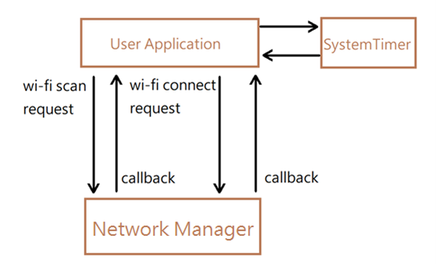
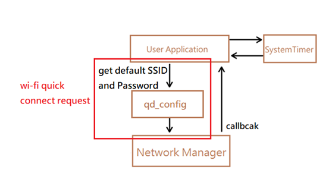

Wi-Fi example
Wi-Fi example is intended to demonstrate the Wi-Fi functionality, and to provide code that you can copy and adapt into your own projects
Wi-Fi scan connect
Wi-Fi scan connect example is a Wi-Fi process from Wi-Fi scan to Wi-Fi connect. First executing Wi-Fi sacn, scan to the AP in the environment. According to the scanned AP results, execute Wi-Fi connect to one of these APs. This example is in examples\wifi\wifi_scan_connet.

After APP_init , It will start systemTimer. After timer timeout , User Application will send Scan request to Network Manager. The Network Manager will call the callback function to notify the User Application Scandone after the Scan is completed. Once the Application receives the callback function, the user can use the Scan result to select the desired wifi connection and send a Connect request to the Network Manager, and the Network Manager will call the callback function to notify the User Application after connection done.
Wi-Fi quick connect
Wi-Fi quick connect is a example to do the fast Wi-Fi setting. The developer can set a default AP information (ssid, password), this example skips some Wi-Fi process (e.g. Wi-Fi scan) and notify the bottom layer to connect to this AP directly. If disconnecting to the default AP, this example will re-connect this AP automatically. This example is in examples\wifi\wifi_quick_connect.

After APP_init, it will start SystemTimer. After timer timeout, User Application will get default SSID and Password from qd_config. Then Network Manager use the AP information to pass to bottom layer that implement WI-FI scan and Network Manager will clear all old AP recorders for saving this AP information to auto-connect if WI-FI disconnect then Network Manager retrieve the scan result (ex: AP bssid) to pass to bottom layer that could use the AP bssid to implement WI-FI connect. By the way, the AP information could be brought by the third party (MCU).